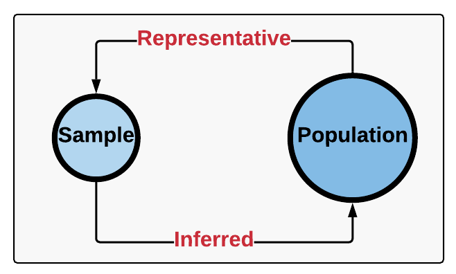

Inferential Statistics: is a branch of statistics that is used to make predictions, given a sampling of data. There are two main areas:
- Estimating parameters:
Making inferences about a larger population based on a samples descriptive statistics. - Hypothesis testing:
The process of taking sample data and testing an assumption, and using the outcome to make statistical decisions.
Why is this important?
Inferential statistics is
important because it enables statisticians to make predictions with a limited dataset. Unlike
descriptive statistics, which provides a snapshot into the data analyzed, inferential statistics takes
this information, and makes inferences about the larger population, or between several groups within
that population.
- Binomial Theorem
- Normal Distributions
- T-Distributions
- Central Limit Theorem
- Regression Analysis
- Machine Learning